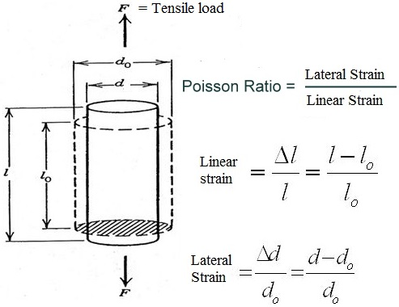
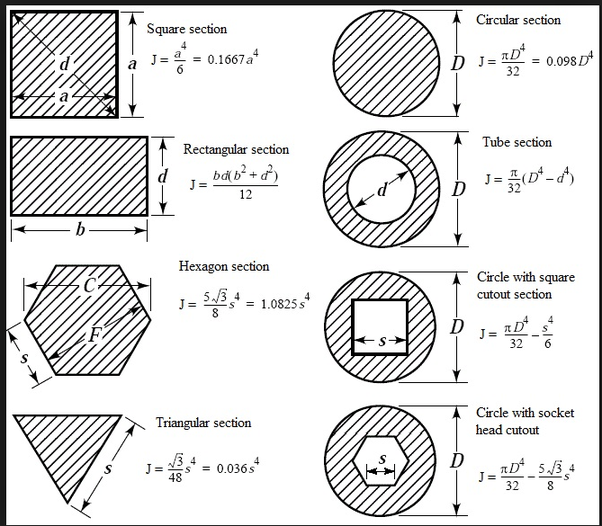
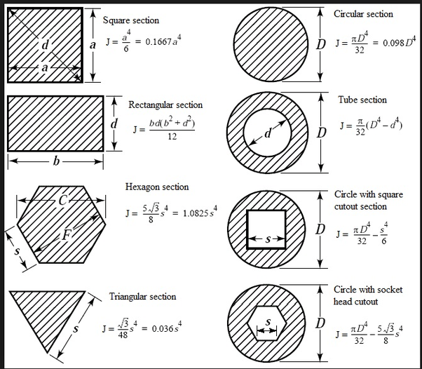
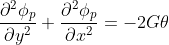
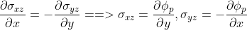
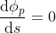
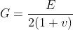
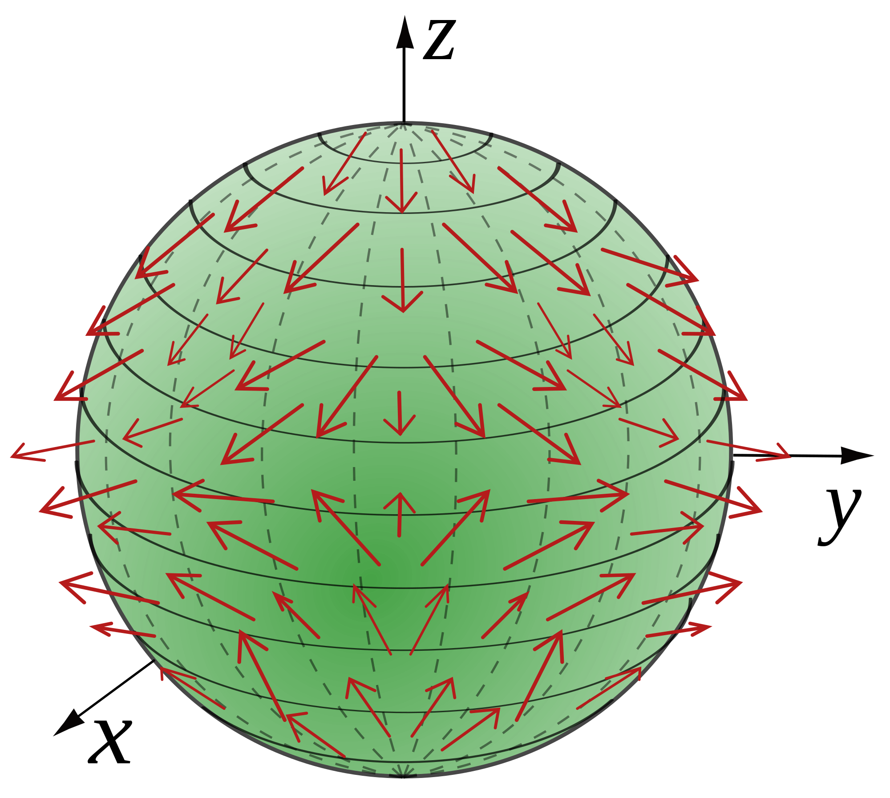

DATA DICTIONARY
- Angle of twist - It is defined as the angle by which a cross section of a beam perpendicular to longitudinal axis deflects from its position by the application of torque. It is denoted by β. Formula: β = θ * z, where θ is angle of twist per unit length and z axis is longitudinal axis.

- Angle of twist per unit length - It is denoted by θ. When one side of the beam is assumed to be fixed, and angle of twist is beta on length L, then θ is angle of twist at cross section of unit length. Formula: θ = β / L
- Compatibility equations - Displacement fields can be found out by strain field through integration. In the 2D case, there are three strain-displacement equations but only two components of displacement. This can be deduced that strains fields are related in some ways among each other, strain fields are not independent. These other required relations come from strain compatibility equations. Physical Meaning: When all individual parts of one material component deform/rotate, they all are required to stay together on adding back post deformation. The compatibility equations ensure this fundamental assumption.
 In three dimensional case, there are six strain compatibility equations, which strain fields need to be satisfied.
In three dimensional case, there are six strain compatibility equations, which strain fields need to be satisfied. 
- Deflections - Deflection is the degree by which an element is displaced post deformation when load is applied. Its SI unit is meters. In cases of torsion, the displacement fields give the fair idea of deflections. But the deflection of a member can be computed by integrating the slope of the deflected member with respect to the length of the beam. Most literatures on mechanics of solids assume deflection like this:

- Direct method for circular section - Torsion problems consisting of prismatic bars of circular cross section don’t need a generalised method to compute the stresses and moments. It can be solved by a simple algebraic and geometric approach.
- Elastic Material - In the quantitative analysis, assumption of elastic material ensures that 3D hooke’s law is applicable. In general, elasticity refers to the tendency of materials to return back to their original shape and size after all loads are removed. Thus elastic materials do the same, and we can assume stress is linearly proportional to strain in a linear elastic region. Line OA depicts elastic behavior of the material.

- Finite element method - Solutions of thousands to ten-thousands dependent equations are tough to compute through analytical methods. Thus these types of equations are solved through numerical methods. Finite element and finite volume methods are commonly used numerical methods, which convert differential or partial differential equations into algebraic equations using weighted average integral approach. Some softwares for FEA include ANSYS, Abaqus, Cosmos, etc.
- Hooke's law - Hooke’s law describes the stress-strain relationship using constants like young’s modulus (E), shear modulus(G) and poisson ratio. The below six equations relates 3D stress and strain field, with assumption of linear elastic and isotropic property of material.

- Isotropic Material - Materials with uniform properties in all directions, i.e.all physical properties like young’s modulus, shear modulus, poisson ratio, bulk modulus, etc are independent of direction. Common examples of isotropic materials are glass and metals because of randomness due to non-crystalline structures. Materials which are not isotropic are called anisotropic materials like wood, slates, etc. Properties in parallel direction of the grains are different than properties perpendicular to the grain.
- Limit of proportionality - It is the point in the stress-strain curve beyond which hooke’s law is not applicable. The stress proportionality to the strain and the elasticity of the material are valid only till the limit of proportionality, the deformation becomes inelastic after this limit.
- Poisson Ratio - Poisson ratio measures the ability to undergo Poisson effect, it describes the material’s deformation in direction perpendicular to the loading’s direction. Poisso ratio is the negative ratio of transverse strain to axial strain. It ranges between 0 to 0.5 and is unitless. 
- Polar moment of Inertia - It is a measure of the material's ability to resist torsional deformation after application of torque at the longitudinal axis. It is denoted by J and unit is m4. More polar moment of inertia will ensure more torsional rigidity, thus more twisting moment ‘T’ will be required to turn the shaft by the same angle. It is geometric property, independent of material constituents. Formula for polar moment of inertia is:
 Polar Moment of inertia of notable cross sections: 
Polar Moment of inertia of notable cross sections: 
- Prandtl Membrane Theory - It is about solving the torsion problems by elastic membrane analogy. He proved that torsion’s laplace equation of prandtl stress function is similar to elastic membrane equation of uniform pressure. Laplace equation: 
- Prandtl Stress Function - Prandtl stress function is used to reduce two unknown stresses (σxz , σyz) to one unknown prandtl stress function (φ).  Prandtl stress function is constant on surface ‘s’: 
- Prismatic bars - The cross-section is constant at any location across the long axis of the beam.

- Rigid body rotation - It implies that all particles in the plane perpendicular to the rotation axis will rotate by the same angle.
- SN Curve - SN curve is the graph between repetitive stress (S) and number of cycles to failure (N). SN curve is used to judge fatigue properties of a material.

- Shaft - It is a rotating structural member which can bear torsional shear stress. It is used to transmit power from one machine part to another.
- Shear Modulus - It is the ratio of shear stress to shear strain, denoted by G. Its SI unit is pascal, but generally expressed in GPa. It describes the response of the material to shear stress. In case of isotropic material, shear modulus is related to young’s modulus and poisson ratio by following equation: 
- St. Venant Principle - Stress distribution lines distort from straight paths when lines are near the end of the surface of loading. St. Venant principle states that, “The stress distribution lines located away from the load and support will remain straight/undistorted.”

- Tensor - Tensors are mathematical objects used to describe multilinear relationships with other objects of space. It is generalisation of vectors (first rank tensor) and scalars (zero rank tensor). Some examples of tensor quantities are stresses, strains, moment of inertia, etc.
- Torsion - Twisting of the object about its longitudinal axis on the application of two equal and opposite torques.

- Torsional Rigidity - It is the torque required in torsion to make a unit angle of twist in elastic material, thus it is describing the material’s resistance to torsion. It can also be defined as the product of shear modulus and polar moment of inertia. SI unit is N-m2.
- Traction Vector - It is the force vector divided by cross sectional area, with units in MPa. But it is not a stress tensor, it will be treated as a vector having direction and magnitude.

- Vector Field - Vector field is a vector assignment to each point of the space. It is visualised through collections of arrows which describe the magnitude and direction of any property at each point of the space. The real life applications of vector fields include video and game making, graphic designing etc. 
- Von Mises Criteria - It is the criteria used for ductile materials to predict whether material will get fracture or not. If von mises stress is greater than yield limit, then material will yield. Von mises stress can be calculated by:

- Warping - It is the building up of torsional hills on the surface of non circular cross sectional shafts due to deformation in axial direction because of twisting.
 Torsional Hills due to warping in non circular cross section
Torsional Hills due to warping in non circular cross section
- Warping Function - It is the function used with z displacement ‘w’ to describe warping phenomenon. It is denoted by Ψ. St. Venant assumed w = θ* Ψ(x,y), thus warping function is z axis (longitudinal axis) displacement per unit angle of twist per unit length.
- Young's Modulus - It is the measure of the material’s normal strain response to the normal stress, it is the slope of the stress-strain curve in the elastic region. It is denoted by E, with the SI unit of pascal. It is generally expressed in GPa.
Click here for Theory Manual